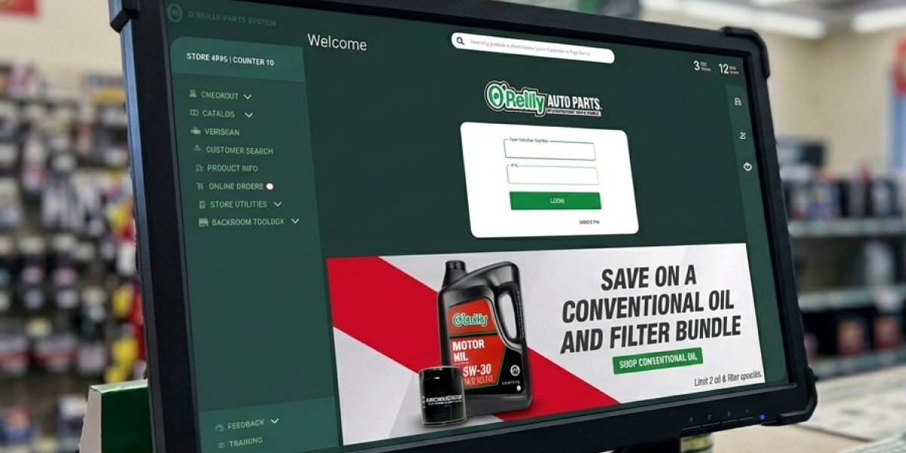
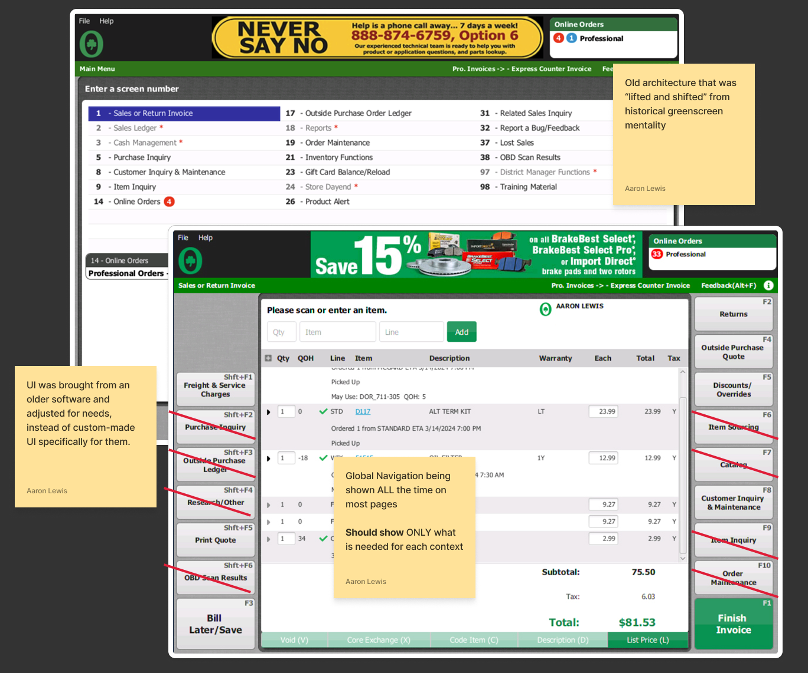
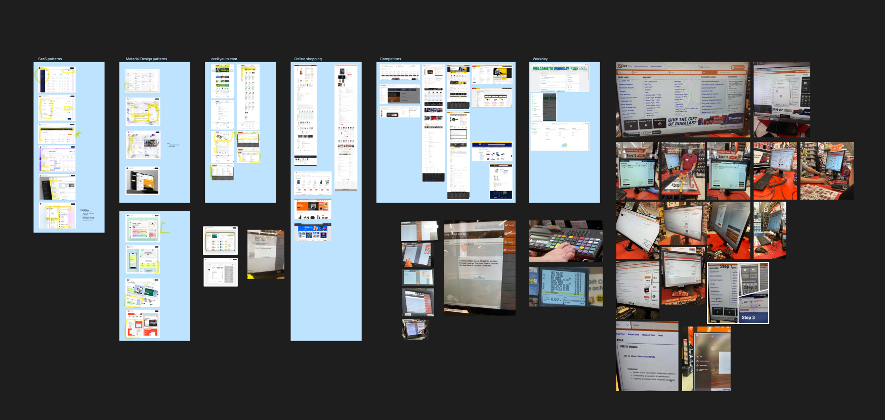
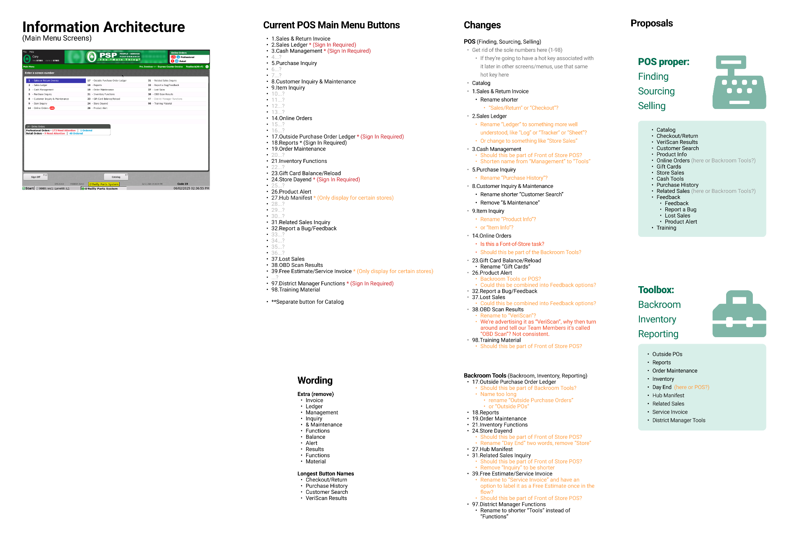
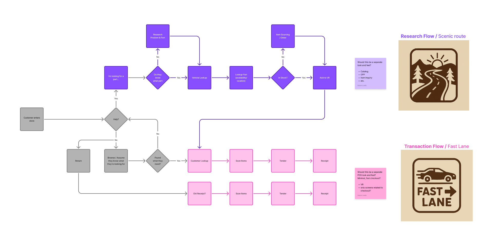
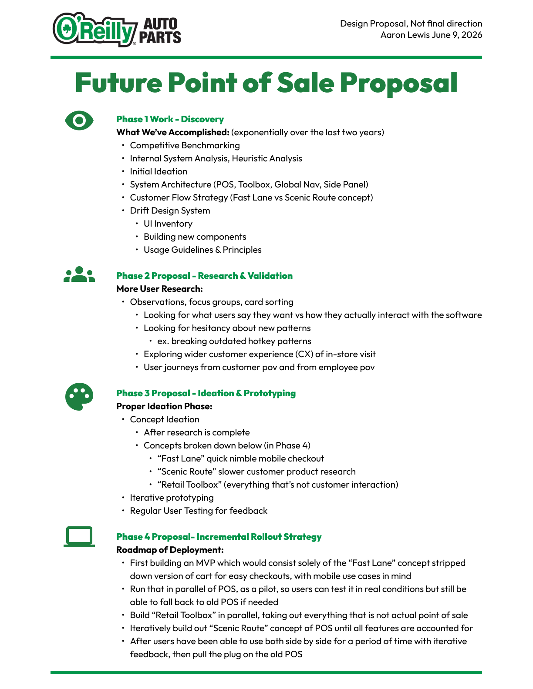

Future
Point of Sale
Designing the system, not just the UI.
A strategic discovery initiative that explored how a modern point of sale could better support employees through systems thinking, information architecture, and a phased modernization roadmap.

If we were designing our POS today, what would it become?
After years of iterative improvements, our UX team was given the opportunity to step back and ask a much larger question. Rather than jumping directly into redesigns, we approached the work as a discovery initiative.
The objective wasn't to produce production-ready interfaces. It was to build a shared understanding of the current experience, identify long-term opportunities, and establish a strategic direction for future development. As one of three designers on the team, I contributed to research, information architecture, workflow analysis, interaction design, and concept development.
A powerful product that had grown hard to navigate
The existing POS supported thousands of store employees and had evolved over many years. New capabilities had been layered onto the application over time, creating a product that was powerful but increasingly difficult to navigate.
We recognized that redesigning individual screens wouldn't solve the underlying problems. Before proposing solutions, we needed to understand how the product had grown, where friction existed, and what a modern retail experience could look like.
Our goal was to answer one question: What should the next generation of our point of sale system be?
Four goals to guide the discovery
Auditing what the POS had become
We began by auditing the existing application, documenting workflows, identifying recurring usability issues, cataloging features, and mapping how the product had evolved over time.
One pattern became increasingly clear: many operational tools had gradually become intertwined with the point of sale itself. Inventory functions, operational utilities, and backroom workflows often lived alongside customer-facing checkout tasks, creating unnecessary complexity for employees whose primary responsibility was completing transactions.

Should every retail function live inside the POS, or should the POS focus on selling while supporting tools live elsewhere?
Learning from patterns, not copying features
To broaden our perspective, we benchmarked competing retail platforms and explored interface patterns beyond our own industry.
Rather than looking for features to copy, we examined how successful products handled navigation, workflow organization, progressive disclosure, search, and contextual actions. These benchmarks helped establish a shared vocabulary for discussing potential directions while revealing patterns that could be adapted to our own environment.

From screens to structure
As we synthesized our findings, the conversation shifted from screens to structure. One proposal was separating operational retail tools from the transaction experience itself, letting the POS focus on selling while a dedicated Retail Toolbox housed supporting workflows used throughout the store.

Within the POS itself, another distinction emerged. Not every employee interaction had the same goal. Some interactions prioritized speed and efficiency. Others required exploration, comparison, and customer assistance. That insight led to the concept of two complementary modes.
Fast Lane
A streamlined experience optimized for experienced employees performing common transactions as quickly as possible. This would also be minimal and performant on the code side which would be helpful for mobile use-cases.
Scenic Route
A guided experience designed for research-heavy interactions where employees help customers compare products, answer questions, and make purchasing decisions.
Rather than forcing every workflow into a single interface, the architecture acknowledged two fundamentally different ways employees work.

Independent exploration, converging ideas
With the information architecture beginning to take shape, each designer explored concepts independently. Working separately allowed us to investigate different interaction models without influencing one another's thinking.
As we reviewed our work together, something interesting happened. Although our visual solutions differed, many of the underlying ideas were remarkably similar. Instead of diverging, our concepts were naturally converging around common patterns. Those shared ideas became the foundation for deeper exploration.
Concepts that consistently resurfaced
A phased path, not a finished product
Discovery concluded with recommendations for a phased approach rather than a finished product, a sequence built to reduce risk at every step.
Phase Two · Research & Validation
Before investing in detailed design, we proposed validating our assumptions through additional user research to confirm the architectural direction aligned with employee mental models.
- Blue Sky workshops
- Focus groups
- Card sorting exercises
- User journey mapping
- Concept validation sessions
Phase Three · Ideation & Prototyping
Following validation, the next phase would translate concepts into interactive prototypes.
- Fast Lane workflows
- Scenic Route workflows
- Retail Toolbox application
- End-to-end prototype testing
- Iterative refinement based on feedback
Phase Four · Incremental Rollout Strategy
Rather than replacing the existing POS all at once, we proposed an incremental modernization strategy beginning with a Minimum Lovable Product (MLP), a carefully selected set of high-value features. Each release would follow a continuous cycle:
- Pilot with selected stores
- Conduct usability testing
- Gather employee feedback
- Refine workflows
- Expand functionality
- Increase rollout to additional locations
During the transition, employees would use both the legacy POS and the new experience side by side until feature parity was reached. Once the new platform fully supported operational needs, the legacy system could be retired with significantly lower organizational risk.
Proposed roadmap

Reducing uncertainty before major investments
Discovery isn't about predicting the future with certainty. It's about reducing uncertainty before major investments are made.
This project reinforced the value of stepping back from individual interface problems to examine the larger system. By understanding the current state, studying the broader landscape, and exploring multiple architectural directions before committing to a solution, our team created a strategic foundation that could guide years of future product development.
While no production screens were delivered during this phase, the work established a shared vision, aligned stakeholders around a long-term direction, and provided a roadmap for validating and building the next generation of the retail point of sale.